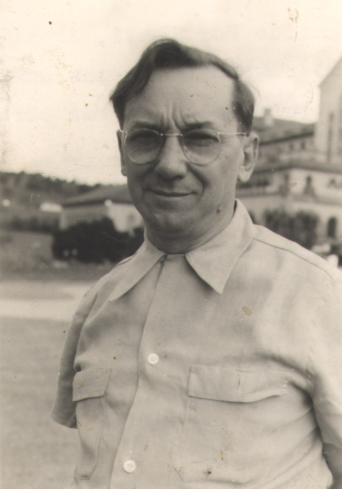
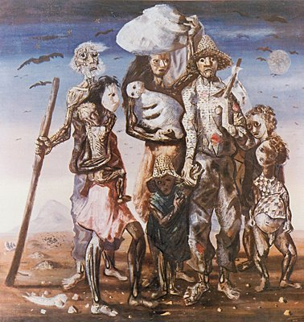

Cândido Portinari

Candido Portinari foi um pintor brasileiro, um dos principais nomes do Modernismo
cujas obras alcançaram renome internacional, como o painel Guerra e Paz, na sede da ONU em Nova Iorque, e a
série Emigrantes, do acervo do Museu de Arte de São Paulo (MASP).
Candido Portinari nasceu em Brodósqui, no interior de São Paulo, no dia 29 de dezembro de 1903. Filho dos
imigrantes italianos Giovan Battista Portinari e Domenica di Bassano era o segundo filho entre 12 irmãos. Aos
seis anos já começava a desenhar. Não concluiu o curso primário. Aos 14 anos participa da restauração da Igreja
de Brodowski.
Com 15 anos, Portinari vai para o Rio de Janeiro, se instala na casa de parentes e ingressa no Liceu de Artes e
Ofícios, mas a cidade grande não lhe fascina e retorna para Brodósqui. Com 18 anos retorna para o Rio e ingressa
na Escola Nacional de Belas Artes.
Em 1921, vende a tela Baile na Roça, que havia pintado assim que chegara à cidade. Em 1922 expõe no Salão da
Escola de Belas Artes. Em 1923, o “Retrato de Paulo Mazuchelli”, ganha três prêmios do Salão.
Recebe do diretor da escola o direito de escolher seus professores. Em 1928, apresenta-se no Salão e conquista o
Prêmio Viagem para o Exterior com o retrato de “Olegário”.

Família de Retirantes